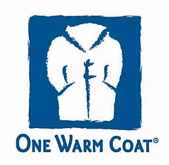

Where to Donate?
It's easier to release your things into the world when you know of a charity that speaks to your heart
Charities Help in Many Ways
One warm coat accepts clean and gently used coats and jackets. Aside from annual organized coat drives in the fall and winter months, there are several local agencies that will gladly accept your donation. www.onewarmcoat.org
Teachers are always looking to make their classroom the best it can be on a small budget. Raft repurposes left over items in good, clean condition at a fraction of the cost of buying them new. Locations in Redwood Shores, Sunnyvale and San Jose. Check their website for items they accept and what they cannot accept. www.raftbayarea.org
New and gently-used items are given directly to homeless families and individuals in the program to help them return to permanent housing and ongoing self-sufficiency. There are several Bay Area locations that accept donations, such as San Mateo, Menlo Park, Palo Alto and San Jose. Visit their website for items in need and also items that are not accepted. www.shelternetwork.org/donate
Donate needed items directly to the PHS shelter in San Mateo to help the animals there. A wish list can be found on their website at www.peninsulahumanesociety.org/donate/wishlist.html Alternatively, you may forward your donations to The Pick, a thrift store in Burlingame operated by The Peninsula Humane Society & SPCA. All proceeds directly benefit the shelter animals. Amongst the list of items accepted are furniture, housewares, clothing and more. Visit their website for a complete list or to schedule a furniture pick-up. www.peninsulahumanesociety.org/services/store.html

The Salvation Army accepts furniture, appliances, mattresses, household goods, clothing and even vehicles. Items must be in good, working condition and may not be accepted if stained. You'll find a value guide on their website to help in determining an approximate tax-deductible value of some commonly donated items. Call to schedule a free pick-up in your area. www.salvationarmy.org
Among the items accepted are gently used prom and formal dresses as well as any age professionally preserved wedding gown. Melissa's Closet strives to see that every girl that needs a dress will have one. With several drop-off locations, your donation can make a difference in the life of a young lady and so much more. www.marissascloset.org